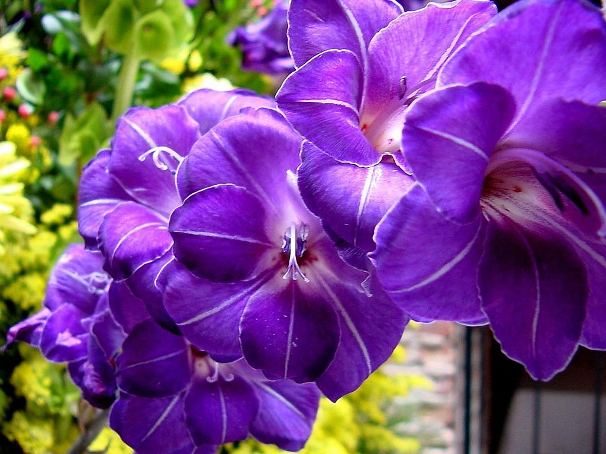

A krizantémnak több száz fajtája létezik, és sokféle színben kapható, beleértve a sárga, fehér, rózsaszín, piros és lila színeket.
A krizantém legjobban teljes napfényben nő, és különösen szeretik a reggeli napfényt, ami felszárítja a harmatot és megakadályozza a penészedést.
A krizantém nyár végétől késő őszig virágzik, és virágzás után visszavágható.
A krizantém kb. 30-90 cm magasra és kb. 60-90 cm szélesre nő meg.

A napfényvirág, más néven a hamis napraforgó virág, egy strapabíró évelő növény, élénk virágokkal, sárga, piros és narancssárga színekben.
Akár 30-150 cm magasra is megnőhet, ezért az erős szél elleni védelemhez szüksége lehet megtámasztásra.
A napfényvirágot rendszeresen kell visszavágni a virágzás elősegítése érdekében, és ősszel vissza lehet vágni a talaj szintjéig.
A napfényvirág háromévente való osztása hozzájárul ahhoz, hogy a növény egészséges maradjon.

A kúpvirág a napraforgó család részét képezi, és akár 90 cm magasra is megnőhet.
Gyönyörű sárga virágokat termel, fekete központi résszel.
A kúpvirágot rendszeresen vissza kell vágni, hogy meghosszabbítsuk a virágzását, és a növényt 3-4 évente el lehet osztani a túlzott elterjedés csökkentése érdekében.

A cickafark egy népszerű, strapabíró évelő növény, amelyet könnyű termeszteni.
Virágfejeit szoros virágok csoportja alkotja. A virágok lehetnek sárga, rózsaszín, piros vagy fehér színűek.
A cickafark fagy- és szárazságtűrő, kártevő-ellenálló, és bevonzza a pillangókat, méheket és más jótékony rovarokat a kertbe.
A cickafark legjobban a nem túl gazdag talajban nő, és a teljes napsütét kedveli.

A sásliliom egy strapabíró évelő növény, amely a legtöbb talajban növekszik.
Szép fényes virágai vannak, amelyek csak egy napig nyílnak, majd elpusztulnak.
Mindegyik virágszárnak általában legalább egy tucat virágbimbója van, így a növény virágzása több héten keresztül élvezhető.
A sásliliom a legjobban teljes napfényben növekszik, de meleg éghajlatú területeken szüksége lehet némi délutáni árnyékra.

A kerti mák egynyári és évelő növényként is kapható, és kiválóan alkalmas kertek díszítésére.
A virágok különféle színben kaphatóak, beleértve a sárga, a narancssárga, a rózsaszín és a piros színeket.
A legtöbb kerti mák fajta akkor nő a legjobban, ha közvetlenül a kertbe vetik.
A magoknak fényre van szükségük a csírázáshoz, ezért a magokat ujjainkkal csak finoman kell belenyomkodni a talajba.

A parlagi ligetszépe virágai késő délután nyílnak ki, és általában másnap reggel újra bezárulnak. A virágok lehetnek sárga, fehér vagy rózsaszínűek.
A parlagi ligetszépe levelei, virágai, gyökerei és magvai egyaránt ehetőek.
A parlagi ligetszépe a legjobban teljes napsütésben növekszik. Jól bírja a részleges árnyékot, de legjobban teljes napfényben virágzik.
Ez a növények könnyen elterjed és egyszerűen szaporítható, magvaról és föld alatti futókon keresztül.
A virágzás után vissza lehet vágni, hogy elkerüljük a nemkívánatos újabb növények felbukkanását a kertben.

Az aranyvessző egy kevés gondozást igénylő évelő növény, tüskés sárga virágokkal.
Könnyen nő és egyszerűen szaporítható magvakról, de vissza kell vágni az elhalt virágokaz annak érdekében, hogy ne a magvak ne érjenek be és ne nője be az egész kertet.
Az aranyvessző a legjobban teljes napsütésben nő és szárazságtűrő, így nem kell gyakran öntözni.
Egyes fajták akár 1,5 m magasra is megnőnek, mások pedig leginkább egy 60-90 cm magasságot érik el.

A tulipánok évente kibújnak a föld alatti hagymákból, tehát évelőknek minősítik őket.
Szinte minden elképzelhető szín és több mint 3000 tulipánfajta közül lehet választani, köztük van néhány gyönyörű sárga színárnyalatú, megkezdve a pasztell sárgától el egészen az élénksárgáig.
A tulipánhagymákat ültetés előtt hideg hőmérsékletnek kell kitenni.
Hűvös éghajlaton a hagymákat ültetés előtt hűvös, száraz helyen, míg melegebb éghajlaton a hagymákat hűtőszekrényben érdemes tárolni.
A tulipán hagymákat kora őszel a legjobb kiültetni, hogy már tavasszal virágzani tudjon.

A nárciszok szép, fényes, tavasszal virágzó hagymás növények, amelyek különféle színben kaphatóak, beleértve a sárga, a fehér és a krém színeket.
Legjobban hűvös és mérsékelt éghajlaton nőnek, ahol évről évre virágzanak, de melegebb éghajlaton évelő növényként is termeszthetőek.

A napraforgók akár 4,5 méter magasra is megnőhetnek, így garantáltan kerted legkiemelkedőbb sárga virágai lesznek majd. Mint ahogy arra nevük is egyértelműen utal, a napraforgók napos helye nérzik magukat igazán jól. Ezen kívül a madarakat és a méheket is magukhoz vonzzák. A Teddy Bear változat dupla virágai kiválóan mutatnak a kertben és csokrokban is.

Ezek a rövidéletű évelő virágok napos helyen, jó vízelvezetésű talajban érzik igazán otthon magukat. 7,5 cm-es virágaikat előszeretettel látogatják a lepkék, maguk a növények pedig 45 cm magasra nőnek meg. A Mesa Yellow (Gaillardia x grandiflora) változat gyönyörű sárga szirmokat hoz és (más kokárdavirágokkal ellentétben) egységes habitusa van.